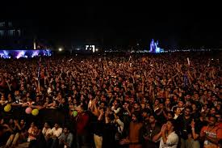
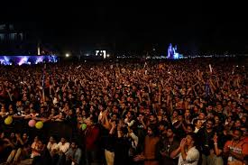
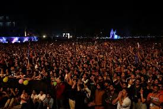

Photo Gallery

 



From stepping into the monumental campus gates to becoming a part of a vibrant and intellectually intense ecosystem, my journey at IIT Bombay has been nothing short of transformative. Each day has been a blend of challenge, exploration, growth, and endless learning. Whether it was late-night hostel discussions, hands-on civil engineering projects, or participating in Mood Indigo — every experience helped me evolve not just as a student, but as a well-rounded human being.

Slide to explore my IITB phases!
Discover IIT Bombay's vast ecosystem — from cultural fests and tech clubs to entrepreneurial cells and research opportunities. Whether you're an artist, coder, or innovator, there's a place for you to grow.
Want to connect or know more? Reach out via Instagram or visit the Civil Engineering Dept, IITB.